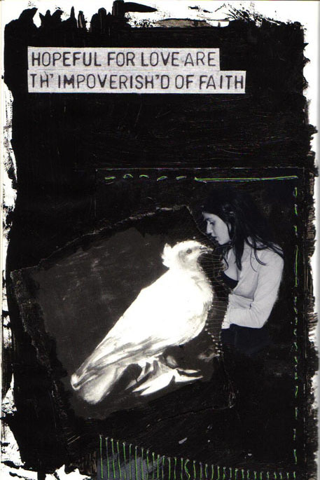

|
 |
her womanly hysterics.
So what of hair-colour, batted eyes, and the making-up?
Even Akhmatova's lover, one poem claims,
slandered her kowtowed sins.
Dark hair and dark eyes the target of kohl.
But what of taking pleasure in gender tags, their provision?
What of our kowtowed sin?
If femininity pricks our need, what then?
I repeat: what of pleasure, its performance?
The twinge of tipping the projected.
If femininity so pricks our uber-need, what sin?
O for a fine dress plus slattern mouth,
the twinge of tipping the projected,
seamed stockings sans genetics, meaning
that fine dress plus slattern mouth,
plus Chanel No. 5 plus hairy pits. REPEAT
|
|
|